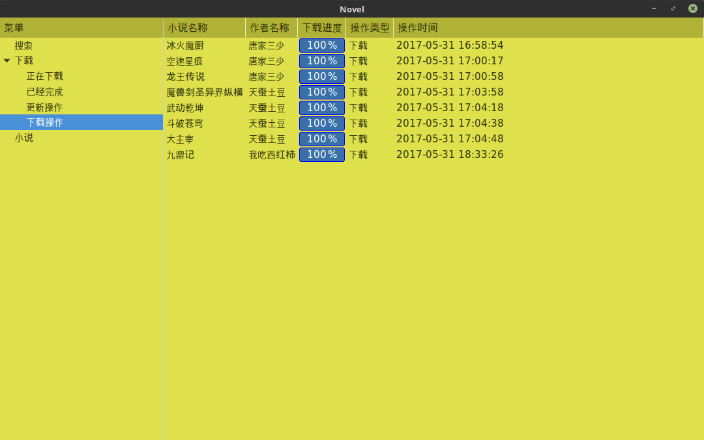
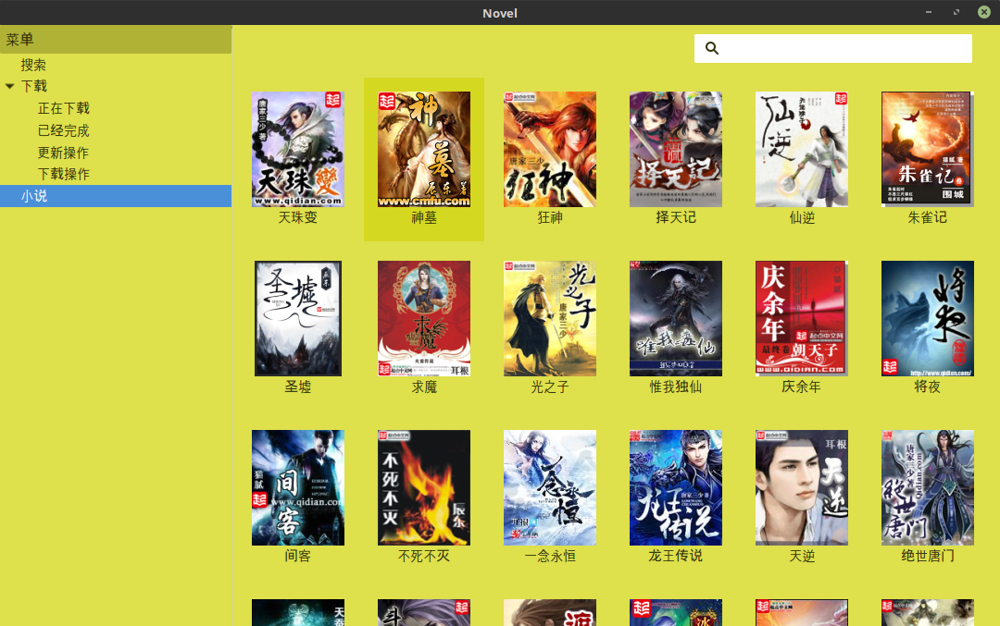

简介
linux平台下支持小说搜索、下载、阅读的小说阅读器。
本软件使用PYTHON/PyGObject/GOLANG进行开发
本软件支持支持多线程下载/更新。
linux平台下支持小说搜索、下载、阅读的小说阅读器。
本软件使用PYTHON/PyGObject/GOLANG进行开发
本软件支持支持多线程下载/更新。
点击主页下载按钮，然后保存文件文件到本地，当下载完毕的时候，您会得到一个deb文件
使用标准的sudo dpkg -i novel-linux-i386_0.0.2.deb命令即可进行安装
1. 点击主窗口注册的搜索菜单项，右侧会显示搜索界面, 如下图所示：
2. 输入要搜索的小说名称，然后点击右侧搜索按钮, 如下图所示：
3. 当搜索到指定小说的时候，界面会如下：

4. 点击下载按钮，则会进行离线下载
通过点击下载菜单项来筛选出不同分配的下载内容
1. 选中下载菜单项查看当前所有下载内容
2. 查看下载菜单项的已经完成子菜单项，查看当前下载完成的内容，如下图所示:
 3. 查看下载菜单项的
3. 查看下载菜单项的正在下载子菜单项，是查看当前下载进度不为100%的内容,如下是所示：
 4. 查看下载菜单项的
4. 查看下载菜单项的下载操作子菜单项，是查看当前下载操作为下载的内容,如下是所示：

5. 查看下载菜单项的更新操作子菜单项，是查看当前下载操作为更新的内容,如下图所示：

点击查看菜单项，右侧窗口会显示书架页面，如下图所示： 
在书架页面，双击您想看的小说则会，自动打开一个新的窗口，显示对应的小说内容，如下图所示：

书架页面选中您想删除的小说，然后鼠标右键会自动弹出上下文菜单，单击移除菜单即可
书架页面选中您想删除的小说，然后鼠标右键会自动弹出上下文菜单，单击更新菜单即可